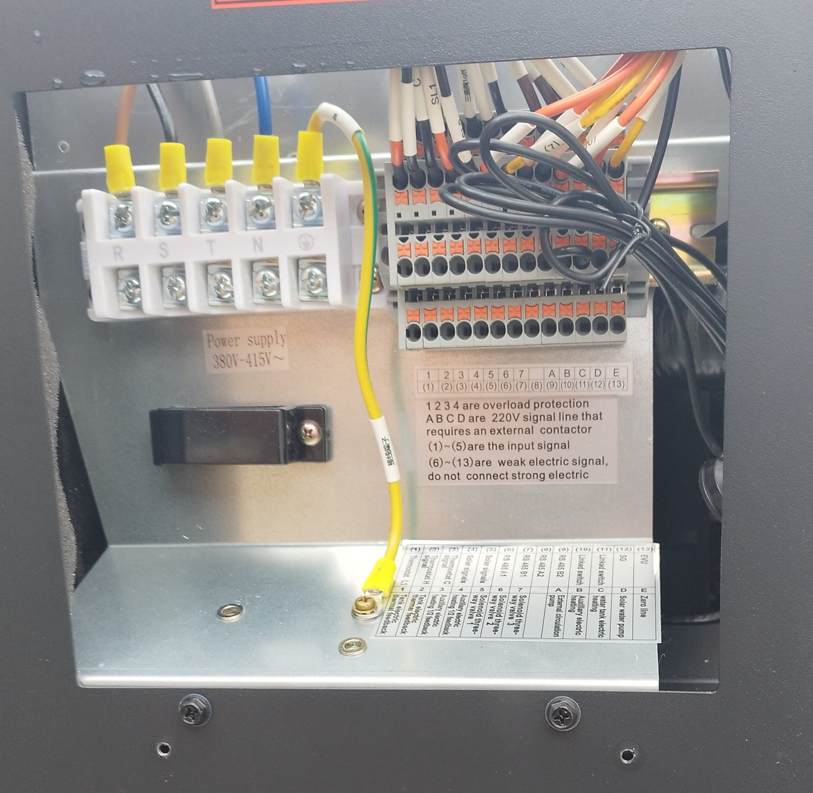
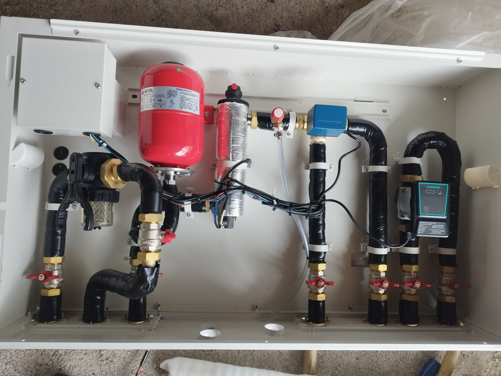
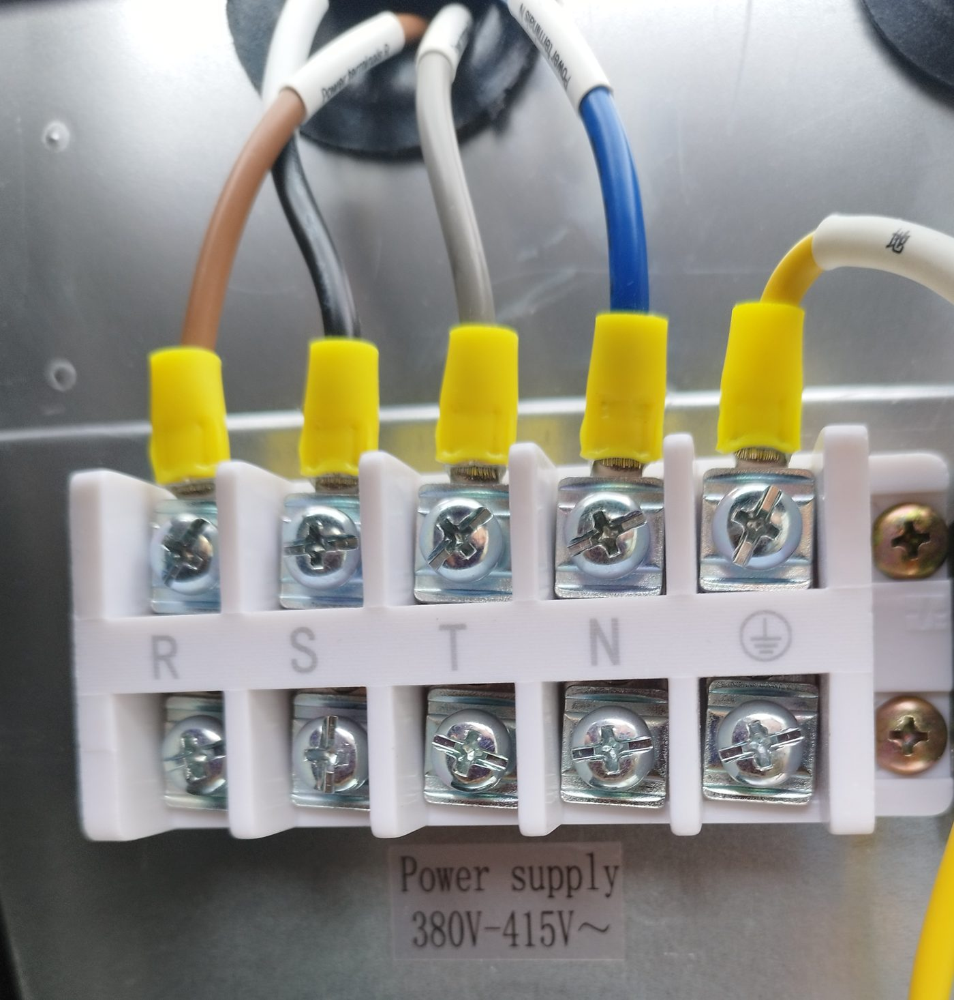
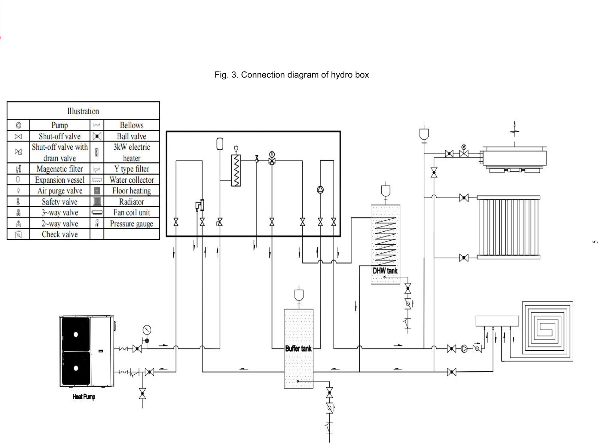
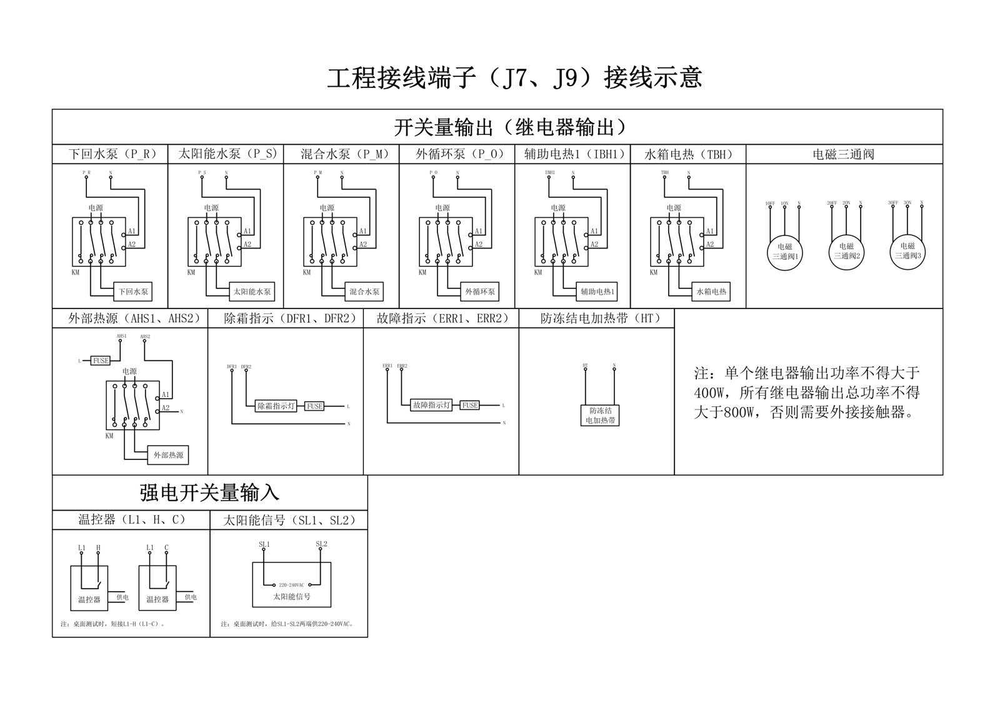

- Samo pooblaščeni električar · napajanje izklopljeno · v skladu z lokalnimi in EU predpisi (R290 = vnetljivo).
- FID stikalo 30 mA + vsepolni ločilnik (≥3 mm) na vsakem tokokrogu. Ozemljite vse.
- Na sponke za šibke signale (6)–(13) nikoli ne priključite omrežne napetosti.
- Grelnika v hranilnikih 200 L in 500 L imata 3 kW in nimata releja — vsak potrebuje svoj kontaktor + svoje zaščiteno napajanje (§4).
1 Kako sistem deluje kot celota
Dve enoti dobita napajanje in komunicirata med seboj. Zunanja toplotna črpalka so možgani; notranji Hydro Box so mišice (črpalka + vgrajeni 3-potni ventil za TSV + raztezna posoda). Grelnika 3 kW v hranilnikih vklapljata kontaktorja, ki ju krmilijo možgani.
① Toplotna črpalka (zunanja enota)

② Hydro Box (notranja enota)

2 Napajanje (4 tokokrogi)
Toplotna črpalka in Hydro Box imata vsak svoj tokokrog, vsak grelnik 3 kW v hranilniku pa potrebuje svoj 1-fazni tokokrog — plošča vklaplja le tuljavo kontaktorja, ne toka grelnika. Vsak tokokrog ima FID stikalo 30 mA.
Toplotna črpalka · 3-fazno
- Napajanje
- 380–415 V · 3~
- Tok
- 8.5 A
- Odklopnik
- 3P · 10 A · C
- Kabel
- 5×4 mm²
- Sponke
- R·S·T·N·PE
Hydro Box · 1-fazno
- Napajanje
- 220–240 V · 1~
- Odklopnik
- 1P · 16 A · C
- Kabel
- 3×2.5 mm²
- Sponke
- L·N·PE
Grelnik hranilnika 200 L
- Moč
- 3 kW → 13 A
- Odklopnik
- 1P · 16 A · C
- Kabel
- 3×2.5 mm²
- Vklaplja
- kontaktor ← Out B
Rezervno/dodatno ogrevanje sistema. Vezava → §4.
Grelnik bojlerja TSV 500 L
- Moč
- 3 kW → 13 A
- Odklopnik
- 1P · 16 A · C
- Kabel
- 3×2.5 mm²
- Vklaplja
- kontaktor ← Out C
Hitro segrevanje TSV + legionela. Vezava → §4.
3 Pregledovalnik sponk — kliknite sponko in poglejte, kam vodi
Izberite sponkovnico, nato kliknite oštevilčeno oznako ali vrstico v tabeli. Spodnja plošča nariše povezovalno črto do tistega, kamor se sponka priključi, in prikaže nastavitev krmilnika, ki jo morate nato spremeniti. Premik miške prikaže predogled; klik zaklene podrobnosti. Kliknite katerokoli fotografijo za povečavo.

| # | Sponka / funkcija | Žica |
|---|
❓ »Kako signal deluje po eni žici?« — ne deluje
Prav imate: signal vedno potrebuje povratno pot. Na tej plošči je povratna pot bodisi sosednja sponka v paru, skupna zbiralka (common) ali skupni nevtralni vodnik. Funkcija, ki je videti kot »ena sponka«, je torej v resnici zanka. Obstajajo štiri vrste:
① Diferencialno vodilo (A in B)
② Brezpotencialni kontakt (signal + skupni)
③ Temperaturno tipalo NTC (2-žično)
④ Relejni izhod (faza + skupni N)
4 Povezave od točke do točke
Vezava v slogu sheme, s pravokotnimi vodniki, za vsako napravo. Shemi obeh grelnikov 3 kW berete od leve proti desni: plošča → kontaktor → hranilnik, pri čemer kontaktor napaja lastno zaščiteno napajanje, termična povratna informacija pa se vrača na ploščo.
A · Grelnik bojlerja TSV 500 L (3 kW) — prek kontaktorja
B · Grelnik hranilnika toplote 200 L (3 kW) — prek kontaktorja
5 Vodni krog, tlak & montaža cevi
Celotna hidravlika: tlaki, shema cev za cevjo z dimenzijami, vsak priključek in kam se priključi, materiali, fitingi, višine & dolžine, izolacija, kakovost vode in glikol — za sistem s Hydro Boxom in brez njega. Dva ločena sveta: zaprt ogrevalni krog (nizek tlak, raztezna posoda + varnostni ventil) in pitna TSV (tlak vodovoda, lastna varnostna oprema).
| Krog | Normalni tlak | Max / nazivni | Varnost & opombe |
|---|---|---|---|
| Toplotna črpalka / ogrevalni krog (zaprt) | 3-barski varnostni ventil + 10 L raztezna posoda (v Hydro Boxu). Hydro Box nazivno 0,3 MPa. Predtlak raztezne posode nastavite ≈ na polnilni tlak v hladnem stanju. | ||
| 200 L hranilnik toplote | sledi ogrevalnemu krogu | nazivno (preizkus 10) | Del zaprtega kroga, zato je praktično omejen na 3 bar ogrevalne strani. |
| 500 L hranilnik TSV (pitna voda) | tlak hladne vode iz vodovoda | (0.7 MPa) | T&P varnostni ventil 0,75 MPa / 99 °C. Vgradite reducirni ventil, če je tlak vodovoda > 5 bar, + raztezno posodo za pitno vodo. |
| Ventilatorski konvektorji (če so) | — | Precej nad tlakom sistema — niso omejujoči dejavnik. Min 0,15 MPa. |
🔧 Montaža cev za cevjo — shema, priključki & dimenzije
Izberite, ali uporabljate Hydro Box. Shema prikazuje vsako cev z njeno dimenzijo; kliknite priključek (krog ali vrstico) in videli boste, kam točno se priključi, dimenzijo cevi, primerne materiale, potrebne fitinge/ventile/tipala in izolacijo.
Celotna priključna shema (proizvajalčeva sl. 3)

Kaj vsebuje (od zgoraj → navzdol)
- Toplotna črpalka (zunanja) — zaporni ventili, manometer, odzračevanje na dvižnem vodu.
- Hydro Box (črtkano) — obtočna črpalka, motorni 3-potni ventil, 3 kW grelec, avtomatski odzračevalnik, ventil na vsakem priključku.
- Hranilnik toplote + lastna raztezna posoda; polnilni/dopolnilni vod (protipovratni ventil · Y-filter · krogelni ventil).
- Hranilnik TSV z notranjo tuljavo + raztezna posoda + varnostna oprema na dovodu hladne vode (protipovratni ventil · filter · krogelni ventil · reducirni ventil).
- Talno ogrevanje prek mešalne postaje (mešalni ventil + 2. črpalka + razdelilnik/zbiralnik).
- Krogi za radiatorje in ventilatorske konvektorje, vsak z zapornimi ventili.
Priključki Hydro Boxa — kliknite katerega koli za specifikacijo cevi
| # | Priključek / cev | Dimenzija |
|---|
Dimenzioniranje cevi (12 kW ≈ 2 m³/h)
| Odsek | Pretok | Min. cev | Ekvivalent | Zakaj |
|---|---|---|---|---|
| Toplotna črpalka ↔ Hydro Box / hranilnik (primar) | ≈ 2,0 m³/h | 1″ / DN25 | 28 mm Cu · 32 mm PEX/PP-R/večplastna | Ujemati se mora z 1″ priključki naprave & črpalko Wilo 25/9 — nikoli ne zmanjšajte dimenzije, sicer toplotno črpalko dušite. |
| Hydro Box ↔ tuljava TSV | ≈ 2,0 m³/h | 1″ / DN25 | 28 mm Cu / 32 mm plastika | Polni pretok med prioriteto TSV. |
| Hranilnik → ogrevalni razdelilnik | na cono | DN20–25 | 22–28 mm | Dimenzionirajte glede na obremenitev priključene cone. |
| Zanke talnega ogrevanja (iz razdelilnika) | na zanko | 16–20 mm PEX | — | Standardna cev za talno ogrevanje; ≤ ~100 m na zanko. |
💧 Črpalki — sta dve (Hydro Box je opcijski)
Ena črpalka je vgrajena v zunanjo toplotno črpalko (Wilo Para 25/9), in — če vgradite Hydro Box — je druga črpalka v njem. Opravljata različni nalogi. To določa, kako priključite talno ogrevanje ali radiatorje.
Črpalka 1 — v toplotni črpalki (primar)
Črpalka 2 — v Hydro Boxu (sekundar)
🏠 Razdelilnik talnega ogrevanja — ne neposredno na črpalko
♨ Radiatorji — da, če so vedno odprti
Materiali cevi
✔ Primerno
- Baker (ustrezni fitingi, posnemanje robov, brez pregrevanja medenine).
- PEX / PE-RT z zaporo proti kisiku (nujno — brez vdora O₂).
- Večplastna cev PEX-AL-PEX — idealna: toga, nepropustna za O₂.
- PP-R (polipropilen), nerjavno jeklo.
- Fitingi & ventili iz medenine / DZR medenine / brona.
✘ NE uporabljajte
- Pocinkano jeklo — korodira v stiku z bakrom v napravi; z glikolom tvori oborine.
- Navadnega neobdelanega jekla.
- Plastičnih cevi brez zapore (prepuščajo kisik → mulj/korozija).
- Neposrednega stika različnih golih kovin (galvanska korozija — ločite z dielektričnimi spojkami).
- Avtomobilskega glikola.
Potrebni fitingi & varnostne komponente
Ogrevalni krog (zaprt)
- 🔧 Zaporni krogelni ventili na vhodu & izhodu vode TČ (servis) — 🟢 na vsakem priključku Hydro Boxa.
- 🔧 Fleksibilni protivibracijski priključki na toplotni črpalki.
- 🟢🔧 Avtomatski odzračevalnik na vsaki najvišji točki (TČ ima notranje samodejno odzračevanje — ne privijte ga premočno).
- 🔧 Izpustne pipe na vsaki najnižji točki.
- 🟢🔧 3-barski varnostni ventil + cev do odtoka (stran od elektrike).
- 🟢🔧 Raztezna posoda — TČ ima 5 L @1 bar, Hydro Box doda 10 L; za velike/visoke sisteme dodajte več.
- 🟢🔧 Manometer + polnilno/izpustni ventil (z zaščito pred povratnim tokom skladno z lokalnimi predpisi).
- 🟢🔧 Magnetni / ciklonski filter nečistoč na povratku v TČ — močno priporočeno (navaden lovilec nesnage ne ujame drobnih kovinskih delcev).
- 🔧 Pomožna črpalka samo, če je tlačni padec v ceveh prevelik.
Stran TSV (pitna voda)
- 🔧 T&P varnostni ventil 0,75 MPa / 99 °C na hranilniku TSV → odtok.
- 🔧 Reducirni ventil na dovodu hladne vode, če je tlak vodovoda > 5 bar.
- 🔧 Raztezna posoda za pitno vodo na dovodu hladne vode (prevzame raztezanje pri segrevanju).
- 🔧 Protipovratni ventil + zaporni ventil + izpust na dovodu hladne vode.
- 🔧 Tipalo hranilnika TSV — črno tipalo naprave potisnite v potopno tulko hranilnika (TWout2).
- 🔧 Tipala hranilnika toplote (TACt1/TACt2) v potopne tulke hranilnika, če se uporablja.
- 🔧 Opcijski termostatski mešalni ventil za omejitev temperature na pipi (zaščita pred oparinami), kadar vodo zaradi legionele hranite vročo.
Višine, dolžine & zunanji razvod
Kako visoko / kako daleč?
- Višine stavbe črpalka ne omejuje — gre za zaprt krog, zato se statična višina izniči. Omejujeta jo polnilni tlak (≈1,5 bar ≈ 15 m višine) in zgornja meja 3 bar. Visoka hiša → napolnite nekoliko višje (ostanite < 3 bar) in raztezno posodo dimenzionirajte glede na volumen vode.
- Dolžina cevi je proračun tlačne višine: trenje v ceveh + filter + hranilnik + tuljava TSV + ventili morajo ostati pod ~9 m, ki jih črpalka zagotavlja pri vašem pretoku. Pri 1″/DN25 je to za običajno hišo velikodušno; če so razvodi dolgi ali je fitingov veliko, povečajte na DN32 ali dodajte pomožno črpalko (navodila jo zahtevajo, če je tlačni padec prevelik).
- Minimalni volumen vode: 200 L hranilnik zlahka pokrije potrebo toplotne črpalke po stabilnem delovanju in energiji za odmrzovanje — pri 12 kW ni skrbi.
Zunanja cev med napravo & hišo
- Naj bo čim krajša; vsak meter zunaj pomeni toplotne izgube + nevarnost zmrzali.
- V celoti izolirajte z zaprtocelično, UV-obstojno, vremensko odporno izolacijo.
- Voda zunaj mora biti zaščitena pred zmrzaljo — glikol (glej spodaj) in/ali vgrajena funkcija proti zmrzovanju naprave ob stalnem napajanju.
- Cevi položite v padcu, da jih je mogoče izprazniti; zaščitite jih pred UV, glodavci in mehanskimi poškodbami.
- Pri hlajenju lahko s cevi kaplja kondenzat — speljite/izolirajte jih tako, da ničesar ne poškoduje.
💧 Odtok kondenzata — kam gre voda iz zunanje enote
Pri ogrevanju se na zunanjem uparjalniku nabira vlaga in ivje; vsako odmrzovanje ga stali, voda pa odteče skozi odtočno odprtino čisto na dnu zunanje enote (dno ohišja). V hladnem, vlažnem vremenu je to lahko več litrov na dan. Ta voda nima nobene zveze z ogrevalnim krogom ali Hydro Boxom.
✅ Speljite jo v zemljo — stran od betona
- Voda naj iz odprtine na dnu odteka v odprto zemljo ali gramozno posteljico ob ali pod enoto, kjer lahko ponikne.
- Ne na beton (plošča, podstavek, terasa, pot): voda se vpije v beton, zmrzne in ga razpoka, nastane pa tudi ledena ploskev.
- Če enota stoji na betonskem podstavku, pustite pas gramoza / odprtino pod odtokom ali s kratko cevko speljite vodo s podstavka na zemljo.
- Enoto montirajte dvignjeno (podstavek / nogice / stenski nosilec), da je odprtina prosta in je sneg ne zamaši z ledom.
🔧 Priložen pribor in zaščita pred zmrzaljo
- V škatli so 2 odtočna nastavka, 2 PVC cevki in 3 gumijasti čepi — uporabite jih le, če morate vodo odvesti drugam; odvečne odprtine v dnu zaprite s čepi.
- Cevka mora imeti ves čas padec in biti kratka — dolga cevka zamrzne. Prosto kapljanje na gramoz/zemljo je najbolj odporno na zmrzal.
- Grelec dna ohišja (DPH) preprečuje led v koritu — enota naj bo pozimi pod napetostjo.
- Priključek ④ "drain hole" na Hydro Boxu je samo za praznjenje vodnega kroga, ne za kondenzat.
🧥 Izolacija
- Izolirajte celoten krog — dvižni in povratni vod.
- Uporabite zaprtocelično, parno zaporno izolacijo (npr. EPDM/elastomerno), da se v načinu hlajenja ne rosi.
- Debelina ≥ 20 mm, kjer je okolica > 30 °C in vlažnost > 80 % RV (preprečevanje kondenzacije).
- Zunanje cevi & cevi TSV: debelejša + vremensko odporna izolacija; izolirajte tudi ventile/fitinge.
❄ Zaščita pred zmrzaljo (glikol) & kakovost vode
| Min. zunanja | −5 °C | −10 °C | −15 °C | −20 °C |
|---|---|---|---|---|
| Glikol | 10 % | 15 % | 20 % | 25 % |
- S hranilnikom TSV uporabite propilenglikol (z inhibitorji) — ne etilenglikola (strupen). Nikoli avtomobilskega glikola; nikoli pocinkanih cevi z glikolom.
- Voda skladno z EN 98/83 EC; obstoječe sisteme izperite; vgradite magnetni filter.
- Napolnite na 1–2 bar; tlak naj bo ves čas > 0,3 bar.
Katere dele dejansko potrebujete
🟢 S Hydro Boxom
- Izolirane cevi (z glikolom) TČ ↔ Hydro Box ter Hydro Box ↔ hranilnik / TSV / cone.
- Magnetni filter na povratku (priporočeno), izpustne pipe, odzračevalnike na najvišjih točkah.
- Vso varnostno opremo na strani pitne vode TSV (T&P, reducirni ventil, raztezna posoda, protipovratni ventil).
- Tipala hranilnikov v potopne tulke; conske zaporne ventile.
🔵 Brez Hydro Boxa
- Sistemsko obtočno črpalko (+ pomožno črpalko po potrebi).
- Motorni krogelni 3-potni ventil (DN25, 230 V, < 90 s) za preklop na TSV — samo če je prisoten tudi ogrevalni krog. Sistem samo za toplo vodo preklopnega ventila ne potrebuje.
- Raztezno posodo, 3-barski varnostni ventil, manometer, polnjenje/izpust, avtomatske odzračevalnike.
- Magnetni filter nečistoč + lovilec nesnage na povratku; zaporne ventile; fleksibilne priključke.
- Vse s seznama za pitno vodo TSV ter vsa tipala hranilnikov.
6 Kako delujeta 3-potni ventil & prioriteta TSV
En preklopni ventil na izhodu toplotne črpalke (vgrajen v Hydro Box) odloča, ali gre toplota v tuljavo hranilnika TSV ali v hranilnik toplote / ogrevanje.
7 Razlaga con
"Cona" je skupina grelnih teles s skupno ciljno vrednostjo. Do dve ogrevalni coni (A & B) + topla voda. Vsako je mogoče krmiliti po temperaturi vode ali po sobni temperaturi (krmilnik/termostat kot sobno tipalo).
Ena cona (najpogosteje)
Dve coni
Temperatura vode ali sobna temperatura
8 Izbira scenarija — poiščite svojega, od najenostavnejšega naprej
Večina vgradenj je enostavnejša, kot se zdi iz navodil. Poiščite raven, ki ustreza vašemu projektu — vsaka prikazuje minimalne cevi in kable, nato pa korake na krmilniku. Začnite pri ravni 1 in dodajte le tisto, kar potrebujete.
Lestvica zahtevnosti — izberite svojo raven
● Raven 1 · Samo toplotna črpalka + bojler TSV (najenostavnejše)
🎛 Zaporedje nastavitev krmilnika
- [Air Conditioning Type] (vrsta klimatizacije) — pustite tovarniško. Tovarniška nastavitev je [1] Heating & Cooling in je za vgradnjo samo za toplo vodo ni treba spreminjati.
- [Hot Water Function] = On. To naredi sistem za TSV — ne vrsta klimatizacije.
- [Water Tank Heating] = On, [Water Tank Heating Power] = 3000 W.
- Nastavite temperaturo TSV + histerezo; vklopite tedensko sterilizacijo 60–70 °C.
- [Number of modules] = 1.
●● Raven 2 · + Talno ogrevanje, krmilnik = sobni termostat
🎛 Zaporedje nastavitev krmilnika
- [Air Conditioning Type] = [0] Heating Only (v navodilih imenovano tudi »Single Heating«) — ali pustite tovarniško nastavitev [1] Heating & Cooling, če bo kasneje morda dodano hlajenje.
- [Wire Controller Control] = Single Zone Temperature; krmilnik namestite v notranjosti (začetni zaslon 2).
- [Room Temperature Control Scheme] = nastavite tako, da krmilnik uporablja sobno temperaturo.
- [Hot Water Function] = On; [Water Tank Heating] = On (3000 W).
- [Electric Heater 1 Power] = 3000 W (rezervni grelnik hranilnika).
- Sponki za termostat (1)–(2) pustite premoščeni; nastavite nizko omejitev temperature dvižnega voda za talno ogrevanje.
●●● Raven 3 · + Hranilnik toplote + 2 coni: radiatorji (A) + talno ogrevanje (B)
🎛 Zaporedje nastavitev krmilnika
- [Air Conditioning Type] = [0] Heating Only ali ohranite tovarniško nastavitev [1] Heating & Cooling, če bodo ventilatorski konvektorji tudi hladili.
- [Wire Controller Control] = Dual Zone (začetni zaslon 3 ali 4).
- Cona A = temperatura vode (≈45 °C); cona B = temperatura vode (≈32 °C) ali sobna temperatura.
- Vklopite mešalni ventil cone B na Out 6 (+ črpalko cone B na Out 7, če je uporabljena).
- [Hot Water Function]=On, [Water Tank Heating]=On (3000 W); [Electric Heater 1 Power]=3000 W.
- Nastavite nizko omejitev najvišje temperature dvižnega voda za talno ogrevanje (cona B).
●●●● Raven 4 · + Rezervni grelniki (hladno podnebje / zasilno delovanje)
- Hranilnik toplote 3 kW → kontaktor ← Out B; povratna informacija termične zaščite → In 3 & 4.
- TSV 3 kW → kontaktor ← Out C; povratna informacija → In 1 & 2.
- Vsak kontaktor napajan iz lastnega tokokroga 16 A + FID stikalo 30 mA.
- [Electric Heater 1 Power] = 3000 W.
- [Water Tank Heating] = On, moč = 3000 W.
- Če je na voljo, nastavite bivalentno (preklopno) zunanjo temperaturo.
➕ Napredni dodatki — vsak se priključi na eno sponko toplotne črpalke
Ničesar vam ni treba načrtovati na novo — vsaka dodatna funkcija se le priključi na določeno sponko ali rele. Tu je natančno navedeno, katero, kakšen kabel in katera nastavitev.
☀ Solarno ogrevanje vode
- 🔌 Solarna črpalka → rele Out D (230 V).
- 🔌 Signal za vklop solarnega sistema → vhoda (4)(5) (brezpotencialni kontakt).
- 🔌 Tipalo kolektorja → vhod za tipalo TSL (NTC, 2-žilno).
- 🎛 Vklopite Solar function; ko sije sonce, ima solarni sistem pri TSV prednost pred toplotno črpalko.
🔆 Lastna raba FE (samo Huawei)
- 🔌 Modul EEBUS na 2. vodilu RS485 (8)(9) = A2/B2.
- Povezuje se s Huawei SmartAssistant / FusionSolar.
- 🎛 [EEBUS Function] = Active, [OHPCF Configuration] = Config 4.
- Presežek sončne energije porabi za dodatno segrevanje bojlerja/hranilnika (brezplačno shranjevanje). Ni združljivo s Smart Grid — uporabite eno ali drugo.
⚡ Smart Grid (SG / EVU)
- 🔌 SG → (12), EVU → (13) — brezpotencialni signali iz števca / sprejemnika MTK.
- Kombinacije vklopa/izklopa obeh signalov dajo način eco / normal / boost.
- 🎛 [Smart Grid Function] = Use, [Configuration] = 6.
🌡️ Talno in dodatna temperaturna tipala
- 🔌 Tipalo NTC (talno / hranilnik / cona) → njegov priključek za tipalo (2-žilno, polariteta ni pomembna).
- 🔌 Talni varnostni termostat za previsoko temperaturo → vezan zaporedno s črpalko/ventilom talne cone (prekine pretok, če se estrih preveč segreje).
- Naprava že meri temperaturo talnega kroga na TWout3 — dodatno talno tipalo običajno ni potrebno.
9 Glavna vezalna tabela
Celoten projekt v eni tabeli — vključno s tem, kam se priključi posamezna sponka, in nastavitvijo krmilnika, ki jo je treba spremeniti. Filtrirajte (npr. »grelnik«, »ventil«, »smart«) ali natisnite papirno kopijo.
| Blok | Sponka | Funkcija | Priključeno na | Vodnik | Barva | Nastavitev krmilnika |
|---|
10 Krmilnik — celotna navodila za uporabo
Žični krmilnik upravlja vse in ima vgrajen WiFi modul za mobilno aplikacijo (Huilian Smart). V nadaljevanju: tipke in zemljevid menijev, vsakodnevna uporaba, kako izbrati svoj scenarij, nastaviti temperature in omejitve, vremensko vodene krivulje, TSV/sterilizacijo, časovne programe in servisne (napredne) parametre.

📶 Povezava WiFi — krmilnik
- Glavni zaslon → Menu → WiFi settings.
- Prikaže stanje + MAC. »Connecting to the cloud« = že povezano.
- Za (ponovno) povezovanje tapnite Reset WiFi → stanje »distributing in Smart mode«.
📱 Povezava WiFi — telefon
- Telefon na WiFi 2,4 GHz, z močnim signalom.
- Namestite Huilian Smart, se registrirajte / prijavite.
- Add device → toplotna črpalka → vnesite ime WiFi omrežja + geslo → povežite.
- Krmilnik prikaže »Connecting to the cloud« = končano.
6 tipk
| 🔍 [query] | Odpre meni poizvedb — napake, trenutno stanje, različica programske opreme |
| 🔁 [mode] | Nastavitev načina — Auto / Cool / Heat |
| ⚙️ [settings] | Odpre meni Set (vse spodaj) |
| ⏻ [on/off] | Vklop ali izklop cone / TSV |
| ↩ [Return] | En zaslon nazaj |
| 🏠 [Home Page] | Skok na glavni vmesnik |
Zemljevid menijev (meni Set → …)
Time & Date
Timer · dnevni/tedenski · sterilizacija · tihi način · črpalka TSV
Wi-Fi
User Parameters · način · nastavitev ogrevanja/hlajenja/TSV · sobna nastavitev · krivulje
Manual Defrost
History Errors
Force Tank Heater
Force DHW Mode
Holiday · odsotnost / doma
Advanced Para. 🔒 (geslo 123456) · sistemski in inženirski parametri, testi, ponastavitev
A · Vsakodnevna uporaba
Vklop/izklop cone / TSV
- Na glavnem zaslonu tapnite območje (ogrevalno cono ali kartico tople vode).
- Tapnite [on/off] in potrdite. Ikona cone prikazuje vklop/izklop.
- TSV se ne vklopi, če ni nastavljeno Hot Water Function = On (napredno).
Nastavitev načina
- Tapnite [mode].
- Izberite Heating, Cooling ali Auto.
- Hlajenje deluje le v coni A (ventilatorski konvektorji/radiatorji), nikoli v coni samo s talnim ogrevanjem.
Sprememba temperature
- Tapnite številko temperature v tem območju.
- Podrsajte gor/dol do želene vrednosti.
- Tapnite za shranjevanje. Vrednost se posodobi tudi v aplikaciji.
B · Izbira scenarija (način krmiljenja)
Vaš »scenarij« = koliko ogrevalnih con imate in ali se vsaka krmili po temperaturi vode ali po sobni temperaturi. Od tega je odvisno, katerega od štirih začetnih zaslonov dobite. Nastavite ga enkrat, v naprednih parametrih.
Štirje začetni zasloni
Kako ga nastaviti
- Menu → Advanced Para. → vnesite geslo 123456.
- Parameter Settings → System Parameters:
• AC_TYPE [Air Conditioning Type] = [0] Heating Only · [1] Heating & Cooling (tovarniška nastavitev) · [2] Cooling Only. To so edine tri možnosti — nastavitve samo za TSV ni.
• WIRE_SW_TYPE (krmiljenje con) = ena / dve / tri cone. - Extended → Room Temperature Control Scheme = način, pri katerem krmilnik uporablja sobno temperaturo (za zaslon 2/3).
- [Logout] za shranjevanje in izhod iz naprednega načina.
C · Temperature in omejitve
Vsakodnevne nastavljene vrednosti so v Menu → User Parameters. Trde min./maks. omejitve se nastavijo enkrat v Advanced → User Parameters, da uporabniki ne morejo nastaviti previsoko/prenizko (pomembno za zaščito estriha pri talnem ogrevanju).
| Nastavitev | Kje | Običajno območje | Kaj naredi |
|---|---|---|---|
| Heat Temp Set (dvižni vod) | User Parameters | ≈ 25–60 °C | Ciljna temperatura ogrevalne vode. Za talno ogrevanje naj bo nizka (≈30–40 °C), za radiatorje višja. |
| Heat Room Temp Set | User Parameters | ≈ 16–30 °C | Ciljna sobna temperatura (zasloni 2/3 — krmilnik/sobno tipalo). |
| Cool Temp Set / Cool Room | User Parameters | voda ≈ 7–25 °C | Ciljna temperatura dvižnega voda / prostora pri hlajenju (samo cona A). |
| Hot Water Temp Set | User Parameters | ≈ 40–60 °C | Ciljna temperatura bojlerja TSV. Višja = več tople vode, a nižji COP. |
| Različice za cono B (b / B1 / B2) | User Parameters | za vsako cono | Ločene nastavljene vrednosti za 2. (nizkotemperaturno) cono. |
| Min./maks. omejitve | Advanced → User Params | nastavi monter | Omeji uporabnikovo nastavljivo območje. Strojna oprema naprave dopušča 30–75 °C na dvižnem vodu; vstopna voda pri ogrevanju 10–55 °C, pri hlajenju 12–30 °C. |
D · Vremensko vodena regulacija (samodejno nižanje temperature vode)
Kaj naredi
Kako vklopiti
- Menu → User Parameters → Zone A heating curve (in Zone B, če jo uporabljate).
- Izberite nizkotemperaturno krivuljo za talno ogrevanje ali visokotemperaturno krivuljo za radiatorje (ali Disable za stalno temperaturo).
- Strmejša krivulja = toplejša voda v mrazu. Začnite z blago krivuljo in jo med sezono fino nastavite.
E · Topla voda in sterilizacija proti legioneli
Topla voda
- Enkratni vklop: Advanced → Hot Water Function = On, Water Tank Heating = On, Water Tank Heating Power = 3000 W.
- Uporabnik nastavi ciljno vrednost v User Parameters → Hot Water Temp Set.
- Force DHW Mode / Force Tank Heater v meniju za enkratno hitro dogrevanje.
- TSV ima prednost pred ogrevanjem (ogrevanje se med ciklom TSV za kratek čas prekine).
Sterilizacija (proti legioneli)
- Menu → Timer → Sterilization Timer: nastavite dan/uro (običajno tedensko).
- Temperatura 60–70 °C, najdaljši cikel 90–300 min, zadrževanje visoke temperature 5–60 min.
- Za dosego temperature uničenja bakterij uporabi grelnik 3 kW v bojlerju TSV.
- Če vodo hranite tako vročo, pri pipah vgradite termostatski mešalni ventil (zaščita pred oparinami).
F · Časovni programi, udobje in energija
Časovniki
Načini udobja
Energija in informacije
G · Servisni in monterski (napredni) parametri 🔒
Zaščiteno z geslom — Menu → Advanced Para., geslo 123456. Ko končate, vedno izberite [Logout], da se nastavitve shranijo in zaklenejo.
| Skupina | Ključne postavke | Za ta sistem |
|---|---|---|
| System Parameters | AC_TYPE · WIRE_SW_TYPE · REFRIGERANT · RV_SET · PANEL_CTRL | AC_TYPE = [1] Heating & Cooling iz tovarne ([0] Heating Only / [2] Cooling Only sta edini alternativi — možnosti samo za TSV ni); krmiljenje con glede na vaš scenarij; hladivo = R290 (tovarniško). |
| Parametri uporabniških omejitev | HEAT/COOL/HOT_WATER_TEMP_SET min&max · ROOM_TEMP_SET | Omejijo nastavljiva območja; nizek maksimum za talno ogrevanje. |
| Moč grelnikov | Water Tank Heating Power · Electric Heater 1/2 Power · Number of modules | 3000 W za vsak grelnik v hranilniku; moduli = 1 (brez kaskade). |
| Inženirski | PUMPF_CTRL · PUMP SV RPM/FLOW · PUMPF_MODEL · PUMPret_RUN_t · FLOOR_PREHEAT_TEMP | Krmiljenje/hitrost/pretok črpalke, čas delovanja povratne črpalke, temperatura predgretja tal. |
| Testi in orodja | Manual Test · Pump/Cool/Heat/Hotwater/Ability Test · Recycle refrig. · Reset · Modify Password | Samo za zagon in servis. |
| Estrih | Floor Preheat · Floor Dryup Timer | Program postopnega sušenja estriha (dve/tri cone, stanje pripravljenosti). |
H · Pomen posameznih kod (slovar)
Zasloni stanja in parametrov uporabljajo kratke kode. Tu je preprosta razlaga vsake — za filtriranje vpišite v polje.
| Koda | Ime | Kaj je to |
|---|
11 Referenčne risbe proizvajalca
Izvirne risbe Tongyi, na katerih temelji §4 — ohranite jih za preverjanje vezave kontaktorjev in celotne sheme.


12 Hitri pregled barv in presekov vodnikov (EU)
Barve po IEC 60446 / HD 308 S2. Preseki so minimalni za ta sistem — vedno jih preverite glede na dejansko priključeno obremenitev in lokalne predpise.
Barve vodnikov
Faza L1 (R) · enofazno L
Faza L2 (S)
Faza L3 (T)
Nevtralni vodnik N
Zaščitni vodnik PE ⏚ — nikoli za nič drugega
Nizkonapetostni signali in tipala (brez predpisane barve) — ločeno od omrežnih vodnikov
Presek vodnika glede na namen
Trifazno omrežno napajanje toplotne črpalke
Napajanje Hydro Box · vsak tokokrog grelnika 3 kW
Napajanje obtočne črpalke
Tuljava kontaktorja · 3-potni ventil · krmiljenje z relejnega izhoda
Sobni termostat · povratna informacija termične zaščite grelnika
Temperaturna tipala · SG/EVU (bela/oranžna)
Vodilo krmilnika RS485 (6)(7) / (8)(9)